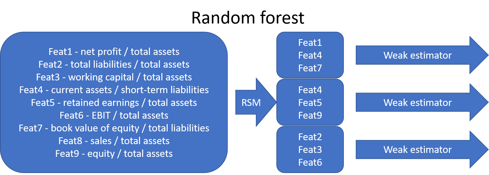
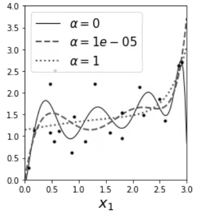

Introduction to Machine learning in accounting#
In this chapter we will discus shallow machine learning models. Although neural networks can also be shallow, the discussion of them is postponed to Chapter 9.
Ensemble methods#
There is a saying: Two heads are better than one. What about even more heads? At least with machine learning, more heads is helpful (I am not sure about humans. :))
The idea of ensemble methods is to join many weak estimators as one efficient estimator. Using this approach, these methods achieve strong results. It is enough that the weak estimator is only slightly better than pure chance, their ensemble can still be a very efficient machine learning method.
Example: Let’s assume that we have a weak estimator that can correctly predict the bankcruptcy of a company 52 % of a time. Thus, the predictor is only slightly better than pure chance (50 %).
However, an ensemble consisting of 100 weak estimators is correct 69,2 % of the time and an ensemble consisting of 1000 weak estimators is correct 90,3 %. of the time!
import scipy.stats as ss
binom_rv = ss.binom(100,0.52)
sum([binom_rv.pmf(i) for i in range(50,101)])
0.6918454716593883
binom_rv = ss.binom(1000,0.52)
sum([binom_rv.pmf(i) for i in range(500,1001)])
0.9027460086409557
In the following figure, one ellipse (a weak estimator) would a very bad classifier due to its incompatible shape with the two classes (the dots and diamonds). However, their ensemble is able to classify observations very well.

There are many options how the aggregate is calculated. It can be weighted average, majority, etc. depending on the application.
Very often the simple estimator in ensemble methods is the decision tree. In a decision tree, with conclusion based on the features of the model a tree structure is concstructed. From the leaves of the tree a prediction for the correct value/class can be inferred. The original decision tree structure gave only predictions for the correct class. The classification and regression trees (CART) have points instead classes in the leaves. This allows much more versatile interpretation and allows regression trees to be used also in regression applications.
Below is an example how decision trees are constructed. We have two features, equity ratio (ER) and return on assets (ROA). Based on these features, the companies are divided into three groups. First they are divided to two groups (ROA over or under r). Then companies in the (ROA < r) -group are divided based on the equity ratio (over or under p).

The interpretation of symbols: diamond: no bankcruptcy risk, cross: low bankcruptcy risk, circle: high banckruptcy risk

The most common ensemble methods are bagging, random forest and boosting. They differ in how they decrease the correlation between their predictions. The benefit of ensemble methods increases when the correlation decreases.
The bagging (bootstrap aggregating) method decreases the correlation by feeding bootstrap samples to the weak estimators.

The original random forest algorithm decreased correlation by feeding a subsample of features to the weak estimators (random subspace method). Later, the bootstrap aggregating of bagging was added to the method.

In recent year, boosting and especially gradient boosting has been a very popular ensemble method in applications. In Boosting, weak estimators work in series. The idea is to feed the data again to a new weak learner so that the weight of misclassified points is increased. After training, the aggreaget estimate of the weak learners is calculated as a weighted mean. The largest weight is given to those learners, whose error function value was smallest.

Xgboost has probably been the most succesfull boosting method. It is very often behind the winning solutions of different machine learning competitions (www.kaggle.com). Here is a short info from the Xgboost github-page: “XGBoost is an optimized distributed gradient boosting library designed to be highly efficient, flexible and portable. It implements machine learning algorithms under the Gradient Boosting framework. XGBoost provides a parallel tree boosting (also known as GBDT, GBM) that solve many data science problems in a fast and accurate way. The same code runs on major distributed environment (Kubernetes, Hadoop, SGE, MPI, Dask) and can solve problems beyond billions of examples.”
Later in the book, we will see an example using Xgboost.
Support vector machines#
The Support Vector Machine (SVM) was previously one of the most popular algorithms in modern machine learning. It often provides very impressive classification performance on reasonably sized datasets. However, SVMs have difficulties with large datasets since the computations don’t scale well with the number of training examples. This poor performance with large datasets hinders somewhat their success in big data and is the reason why neural networks have partly replaced SVMs in that field. However, in accounting we have often datasets of modest size and SVMs work very well with them.

Key ML libraries in Python#
Numpy#
Although Numpy is not exactly a machine learning library, it is the backbone of many other ML libraries and the most important library for numerical computing in Python. Therefore, we start our journey of ML libraries with the basics of NumPy.
The key feature of Numpy is its flexible and fast multidimensional ndarray that can contain large datasets. It enables mathematical operations between arrays in a way that is very similar to calculations with scalars.
import numpy as np
randint() from the random module can be used to create random integer values from a specified interval.
random_values = np.random.randint(100,200,(4,4))
random_values
array([[119, 143, 107, 180],
[145, 168, 179, 188],
[184, 165, 102, 138],
[124, 154, 199, 192]])
Mathematical operations are then very easy to perform. The default is almost always element-vise operations.
random_values*10
array([[1190, 1430, 1070, 1800],
[1450, 1680, 1790, 1880],
[1840, 1650, 1020, 1380],
[1240, 1540, 1990, 1920]])
random_values/100
array([[1.19, 1.43, 1.07, 1.8 ],
[1.45, 1.68, 1.79, 1.88],
[1.84, 1.65, 1.02, 1.38],
[1.24, 1.54, 1.99, 1.92]])
random_values + random_values
array([[238, 286, 214, 360],
[290, 336, 358, 376],
[368, 330, 204, 276],
[248, 308, 398, 384]])
np.log(random_values)
array([[4.77912349, 4.96284463, 4.67282883, 5.19295685],
[4.97673374, 5.12396398, 5.18738581, 5.23644196],
[5.21493576, 5.10594547, 4.62497281, 4.92725369],
[4.82028157, 5.0369526 , 5.29330482, 5.25749537]])
Every Numpy array has a shape parameter that can be used to check the shape of your array.
random_values.shape
(4, 4)
Notice that the array can be, and very commonly is in machine learnig, more than two-dimensional. Here is a four-dimensional array.
randoms = np.random.randint(10,20,(2,2,2,2))
randoms
array([[[[19, 19],
[14, 10]],
[[16, 11],
[17, 14]]],
[[[12, 17],
[10, 18]],
[[19, 10],
[11, 15]]]])
Numpy has array() for creating Numpy arrays. Many kinds of collections are accepted as inputs.
sample_list = [i**2 for i in range(10)]
sample_list
[0, 1, 4, 9, 16, 25, 36, 49, 64, 81]
sample_np = np.array(sample_list)
sample_np
array([ 0, 1, 4, 9, 16, 25, 36, 49, 64, 81])
Two-dimensional arrays can be built from list of lists, etc.
sample_list2 = [[i,i**2] for i in range(10)]
sample2_np = np.array(sample_list2)
sample2_np.shape
(10, 2)
You can check the dimensions with ndim.
sample2_np.ndim
2
You can quickly create arrays of zeros and ones with zeros() and ones().
np.zeros((2,3))
array([[0., 0., 0.],
[0., 0., 0.]])
np.ones((3,2))
array([[1., 1.],
[1., 1.],
[1., 1.]])
Python is flexible, because you do not need to specify the datatype of your variables. Python will recognise it automatically. However, with low-level languages, like C, you need to specify the type of your data. Therefore, to enable efficient computing and connection to low-level languages, Numpy uses a special dtype object to define its arrays.
sample2_np.dtype
dtype('int32')
np.array([[1.1,2.2],[3.3,4.4]]).dtype
dtype('float64')
Full list of Numpy datatypes can be found here: numpy.org/devdocs/user/basics.types.html. Astype() is an important function in Numpy. It can be used to change the dtype of an array. It also works with Pandas dataframes.
sample2_np.astype('float64') # Notice the dots.
array([[ 0., 0.],
[ 1., 1.],
[ 2., 4.],
[ 3., 9.],
[ 4., 16.],
[ 5., 25.],
[ 6., 36.],
[ 7., 49.],
[ 8., 64.],
[ 9., 81.]])
Note that if you transform floats to integers, they will be truncated.
np.array([[3.4,2.3],[4.5,2.1]]).astype('int64')
array([[3, 2],
[4, 2]], dtype=int64)
Vectorisation is an important concept in Numpy. It means that you can do operations to whole arrays without using for loops. This is essential in many kinds of machine learning operations.
sample3_np = np.random.normal(size = (2,3))
sample3_np
array([[ 1.06819015, 0.9001127 , 0.39329317],
[ 0.17527499, -1.06524224, -0.6335131 ]])
sample3_np*sample3_np
array([[1.14103019, 0.81020288, 0.15467951],
[0.03072132, 1.13474104, 0.40133885]])
Because of the vectorisation, for example simulations are very easy to do in Numpy.
coin_np = np.random.randint(0,2,200)
coin_np = np.where(coin_np>0,1,-1)
import matplotlib.pyplot as plt
plt.style.use('bmh')
plt.plot(coin_np.cumsum())
[<matplotlib.lines.Line2D at 0x21ee5214220>]

Dividing with an array works also element-wise.
1 / np.array([[1,2],[3,4]])
array([[1. , 0.5 ],
[0.33333333, 0.25 ]])
Broadcasting means that the operation of a smaller array is repeated through the larger array.
sample4_np = np.array([[1,2,3],[4,5,6]])
sample4_np + [1,1,1]
array([[2, 3, 4],
[5, 6, 7]])
Comparison between arrays return a boolen ndarray.
rand1_np = np.random.normal(size=(2,2))
rand2_np = np.random.normal(size=(2,2))
rand1_np > rand2_np
array([[ True, True],
[ True, False]])
Slicing works efficiently with Numpy.
rand3_np = np.random.randint(1,10,(3,4))
rand3_np
array([[8, 5, 9, 1],
[6, 7, 8, 2],
[7, 1, 2, 7]])
rand3_np[1]
array([6, 7, 8, 2])
Note that the starting value of a slice is not included. Overall, slicing with multi-dimensional arrays is something that needs practice. Experiment with different multidimensional arrays to learn the details of slicing.
rand3_np[1,2:4]
array([8, 2])
Broadcasting is also applied, when assigning values to slices
rand3_np[1] = 1
rand3_np
array([[8, 5, 9, 1],
[1, 1, 1, 1],
[7, 1, 2, 7]])
You can use booleans to pick values that satisfy a certain criteria. Notice that the result here is transformend as a one-dimensional array.
rand3_np[rand3_np < 5]
array([1, 1, 1, 1, 1, 1, 2])
You can use also lists to select specific rows/columns.
rand3_np[[0,2]]
array([[8, 5, 9, 1],
[7, 1, 2, 7]])
rand3_np[:,[0,2]]
array([[8, 9],
[1, 1],
[7, 2]])
You can easily reshape an array with reshape.
reshaped_np = np.arange(12).reshape((3,4))
reshaped_np
array([[ 0, 1, 2, 3],
[ 4, 5, 6, 7],
[ 8, 9, 10, 11]])
There is a special attribute T that can be used to transpose an array.
reshaped_np.T
array([[ 0, 4, 8],
[ 1, 5, 9],
[ 2, 6, 10],
[ 3, 7, 11]])
Numpy has many other matrix operation functions also. The full list can be found here: numpy.org/doc/stable/reference/routines.linalg.html
np.dot(reshaped_np,reshaped_np.T) # Inner product
array([[ 14, 38, 62],
[ 38, 126, 214],
[ 62, 214, 366]])
You can also calculate the product like this:
reshaped_np.dot(reshaped_np.T)
array([[ 14, 38, 62],
[ 38, 126, 214],
[ 62, 214, 366]])
np.cross(reshaped_np[:2,:2],reshaped_np[:2,:2].T)
array([ 0, 15])
Numpy uses for matrix operations low-level libraries, so they are as efficient as the same operations, for example, in Matlab.
square_np = np.random.normal(0,1,(3,3))
square_np
array([[-0.08555592, -0.65782731, 0.37283844],
[-0.56768041, 0.7954763 , 0.38664961],
[-1.43126264, -1.68232606, -1.38542267]])
np.linalg.inv(square_np)
array([[-0.26555308, -0.904741 , -0.32396334],
[-0.78788226, 0.38348814, -0.10500569],
[ 1.23106911, 0.46900481, -0.25961 ]])
Here is an example of calculation errors that happens now and then with computers. The off-diagonal values should be exactly zero.
np.dot(square_np,np.linalg.inv(square_np))
array([[ 1.00000000e+00, -3.71539139e-17, 1.76391529e-17],
[ 1.25646888e-16, 1.00000000e+00, 1.32643955e-17],
[-1.09622239e-16, -1.42226126e-17, 1.00000000e+00]])
Singular value decomposition.
np.linalg.svd(square_np)
(array([[-0.11624681, 0.36401177, -0.92411153],
[ 0.17998093, -0.90729564, -0.38002826],
[-0.97677712, -0.21049952, 0.03995504]]),
array([2.66054766, 0.99544231, 0.64211918]),
array([[ 0.49080066, 0.70019362, 0.51850131],
[ 0.78878575, -0.6098397 , 0.07689334],
[ 0.37004291, 0.37124714, -0.85161248]]))
There is also swapaxes that can be used to swap. So, for two-dimensinal arrays it is the same as transpose. But for higher-dimensional arrays, it gives more possibilities.
more_np = np.random.randint(1,10,size=(2,2,3))
more_np
array([[[8, 9, 6],
[1, 8, 9]],
[[4, 6, 1],
[4, 9, 5]]])
more_np.swapaxes(0,2)
array([[[8, 4],
[1, 4]],
[[9, 6],
[8, 9]],
[[6, 1],
[9, 5]]])
Numpy has many convenient functions for element-wise operations, called universal functions. Let’s look some of them. The full list can be found here: numpy.org/doc/stable/reference/ufuncs.html
np.sqrt(more_np)
array([[[2.82842712, 3. , 2.44948974],
[1. , 2.82842712, 3. ]],
[[2. , 2.44948974, 1. ],
[2. , 3. , 2.23606798]]])
np.exp(more_np)
array([[[2.98095799e+03, 8.10308393e+03, 4.03428793e+02],
[2.71828183e+00, 2.98095799e+03, 8.10308393e+03]],
[[5.45981500e+01, 4.03428793e+02, 2.71828183e+00],
[5.45981500e+01, 8.10308393e+03, 1.48413159e+02]]])
array1_np = np.random.randint(1,10,size=(2,3))
array2_np = np.random.randint(1,10,size=(2,3))
array1_np
array([[9, 9, 2],
[3, 6, 6]])
array2_np
array([[4, 9, 7],
[6, 3, 1]])
np.maximum(array1_np,array2_np)
array([[9, 9, 7],
[6, 6, 6]])
Numpy where is a very important function if you want to do conditional operations with arrays.
a_array_np = np.random.randint(1,10,(2,3))
b_array_np = np.random.randint(1,10,(2,3))
bool_np = np.array([[True,False,True],[False,True,False]])
a_array_np
array([[2, 8, 3],
[2, 5, 8]])
b_array_np
array([[1, 3, 1],
[2, 5, 6]])
np.where(bool_np,a_array_np,b_array_np)
array([[2, 3, 3],
[2, 5, 6]])
There is also a sorting function in Numpy. At default, it sorts values along the last axis:
np.sort(b_array_np)
array([[1, 1, 3],
[2, 5, 6]])
np.sort(b_array_np,axis=0)
array([[1, 3, 1],
[2, 5, 6]])
np.sort(b_array_np,axis=None)
array([1, 1, 2, 3, 5, 6])
Unique is a Numpy version of set.
large_np = np.random.randint(1,10,size=(6,6))
large_np
array([[4, 8, 3, 1, 4, 4],
[4, 6, 3, 3, 7, 5],
[8, 1, 4, 3, 5, 4],
[6, 7, 1, 8, 7, 1],
[1, 1, 6, 2, 9, 7],
[6, 9, 7, 9, 3, 1]])
np.unique(large_np)
array([1, 2, 3, 4, 5, 6, 7, 8, 9])
Scikit-learn#
Scikit-learn is a multi-purpose machine learning library. It has modules for many different machine learning approaches. It is not the best library in any machine learning field but very good at most of them. Also, all the approaches use the common workflow approach of the library. Thus, by learning to do one machine learning analysis, you learn to do them all.
Scikit-learn has libraries for classification, regression, clustering, dimensionality reduction and model selection. It also has an extensive library of methods for data pre-processing.
A very convenient feature in Scikit-learn is pipeline that you can use to construct full workflows of machine learning analyses.
There should be no difficulties to install Scikit-learn. With Python/Pip you just execute pip install scikit-learn and with Anaconda you just install it from the menu (or use conda install scikit-learn in the command line). (Actually, you should not need to do that as Scikit-learn is installed in Anaconda by default.)
Again, the best way to learn Scikit-learn is by going through examples. Thus, more details are in the following examples.
import pandas as pd
import numpy as np
import matplotlib.pyplot as plt
from scipy import stats
plt.style.use('bmh')
Example data from www.kaggle.com/c/companies-bankruptcy-forecast
table_df = pd.read_csv('ml_data.csv')[['Attr1','Attr8','Attr21','Attr4',
'Attr5','Attr29','Attr20',
'Attr15','Attr6','Attr44']]
The above link has the explanation for all the variables. The original data has 65 variables, but we are here using a subsample of 10 variables. With rename() we can rename the variables to be more informative.
table_df.rename({'Attr1' : 'ROA','Attr8' : 'Leverage','Attr21' : 'Sales-growth',
'Attr4' : 'Current ratio','Attr5' : 'Quick ratio','Attr29' : 'Log(Total assets)',
'Attr20' : 'Inventory*365/sales','Attr15' : 'Total_liab*365/(gross_prof+depr)',
'Attr6' : 'Ret_earnings/TA','Attr44' : 'Receiv*365/sales'},axis=1,inplace=True)
table_df
| ROA | Leverage | Sales-growth | Current ratio | Quick ratio | Log(Total assets) | Inventory*365/sales | Total_liab*365/(gross_prof+depr) | Ret_earnings/TA | Receiv*365/sales | |
|---|---|---|---|---|---|---|---|---|---|---|
| 0 | -0.031545 | 0.641242 | -0.016440 | -0.013529 | 0.007406 | -0.631107 | -0.070344 | -0.005305 | -0.016047 | -0.009084 |
| 1 | -0.231729 | 0.074710 | -0.016961 | -0.080975 | 0.007515 | -1.168550 | -0.047947 | -0.119627 | -0.016047 | -0.009659 |
| 2 | -0.058602 | -0.456287 | -0.017504 | -0.189489 | 0.006572 | 0.096212 | 0.001761 | 0.009484 | -0.016047 | -0.016517 |
| 3 | -0.069376 | -0.462971 | -0.016114 | -0.140032 | 0.007477 | 0.296277 | -0.006430 | 0.045912 | -0.010915 | 0.020758 |
| 4 | 0.236424 | 0.097183 | -0.016046 | -0.014680 | 0.007879 | -0.501471 | -0.043107 | -0.021015 | -0.016047 | -0.011036 |
| ... | ... | ... | ... | ... | ... | ... | ... | ... | ... | ... |
| 9995 | -0.079533 | -0.374739 | -0.016179 | -0.189873 | 0.006687 | 0.162211 | 0.002114 | 0.081838 | -0.006462 | 0.006482 |
| 9996 | -0.081046 | 0.689695 | -0.016507 | 0.021280 | 0.007497 | 0.630702 | -0.022646 | -0.018260 | -0.034968 | -0.017303 |
| 9997 | -0.230571 | -0.471830 | -0.016167 | -0.222373 | 0.006716 | 1.249499 | -0.034307 | -0.059516 | -0.013742 | -0.006031 |
| 9998 | -0.108156 | -0.355796 | -0.016352 | -0.042692 | 0.008123 | -0.640261 | -0.059005 | 0.021498 | -0.018374 | 0.001036 |
| 9999 | -0.068674 | 0.293253 | -0.016174 | 0.039538 | 0.007850 | 0.564555 | -0.062083 | -0.012039 | 0.001952 | -0.015710 |
10000 rows × 10 columns
With the clip method, you can winsorise the data. Here extreme values are moved to 1 % and 99 % quantiles.
table_df = table_df.clip(lower=table_df.quantile(0.01),upper=table_df.quantile(0.99),axis=1)
With hist() you can check the distributions quickly. The most problematic outliers have been removed by winsorisation.
table_df.hist(figsize=(14,14))
plt.show()
With corr() you can check the correlations. There is multicollinearity present, but for example with ensemble methods, multicollinearity is much less of a problem.
table_df.corr()
| ROA | Leverage | Sales-growth | Current ratio | Quick ratio | Log(Total assets) | Inventory*365/sales | Total_liab*365/(gross_prof+depr) | Ret_earnings/TA | Receiv*365/sales | |
|---|---|---|---|---|---|---|---|---|---|---|
| ROA | 1.000000 | 0.253631 | 0.198471 | 0.239780 | 0.073774 | -0.022929 | -0.199351 | 0.031788 | 0.482101 | -0.088218 |
| Leverage | 0.253631 | 1.000000 | -0.062703 | 0.678369 | 0.137512 | 0.092470 | 0.017957 | -0.088598 | 0.277234 | -0.007704 |
| Sales-growth | 0.198471 | -0.062703 | 1.000000 | -0.050987 | 0.008612 | 0.124345 | -0.080525 | 0.005148 | 0.008116 | -0.018546 |
| Current ratio | 0.239780 | 0.678369 | -0.050987 | 1.000000 | 0.175938 | -0.055648 | 0.143823 | -0.059035 | 0.169986 | 0.097054 |
| Quick ratio | 0.073774 | 0.137512 | 0.008612 | 0.175938 | 1.000000 | -0.009259 | -0.067865 | -0.067402 | 0.071122 | 0.026820 |
| Log(Total assets) | -0.022929 | 0.092470 | 0.124345 | -0.055648 | -0.009259 | 1.000000 | 0.065786 | 0.009114 | 0.199229 | 0.116596 |
| Inventory*365/sales | -0.199351 | 0.017957 | -0.080525 | 0.143823 | -0.067865 | 0.065786 | 1.000000 | 0.026625 | -0.109237 | 0.154436 |
| Total_liab*365/(gross_prof+depr) | 0.031788 | -0.088598 | 0.005148 | -0.059035 | -0.067402 | 0.009114 | 0.026625 | 1.000000 | 0.005612 | 0.018199 |
| Ret_earnings/TA | 0.482101 | 0.277234 | 0.008116 | 0.169986 | 0.071122 | 0.199229 | -0.109237 | 0.005612 | 1.000000 | -0.052223 |
| Receiv*365/sales | -0.088218 | -0.007704 | -0.018546 | 0.097054 | 0.026820 | 0.116596 | 0.154436 | 0.018199 | -0.052223 | 1.000000 |
The predictors are everything else but ROA, which is our predicted variable.
X = table_df.drop(['ROA'],axis=1)
y = table_df['ROA']
from sklearn.model_selection import train_test_split
Let’s make things difficult for OLS (very small train set). Here we use only 1 % of the data for training to demonstrate the strengths of ridge and lasso regression, which are usually usefuly only when n is close to p.
# Split data into training and test sets
X_train, X_test , y_train, y_test = train_test_split(X, y, test_size=0.99, random_state=1)
len(X_train)
100
Regression#
Linear model#
Although Scikit-learn is a ML library, it is possible to do a basic linear regression analysis with it. (All ML methods are statistical methods. The separation between them is artificial.)

import sklearn.linear_model as sk_lm
We define our LinearRegression object.
model = sk_lm.LinearRegression()
fit() can be used to fit the data.
model.fit(X_train,y_train)
LinearRegression()
coef_ -attribute has the coefficients of each variable and intercept_ has the intercept of the linear regression model.
model.coef_
array([-4.95131952e-03, -2.16483361e+01, 2.56318923e-01, 1.57522210e+00,
-9.94242834e-03, -4.97093290e-01, 7.12480216e-02, 1.56827847e+00,
-2.12876691e+00])
model.intercept_
-0.3581128448264698
score() can be used to measure the coefficient of determination of the trained model. How much our variables are explaining of the variation of the predicted variable.*
model.score(X_test,y_test)
0.14662911115789934
A short code to draw scatter charts between every feature and ROA. The blue dots are the correct values and the red dots are the predictions of the model.
fig, axs = plt.subplots(3,3,figsize=(15,12))
for ax,feature,coef in zip(axs.flat,X_test.columns,model.coef_):
ax.scatter(X_test[feature],y_test,alpha=0.4)
ax.plot(X_test[feature],model.predict(X_test),'r.',alpha=0.2)
ax.set_title(feature)

Mean squared error can be used to the measure the performance. Less is better.
from sklearn.metrics import mean_squared_error
mean_squared_error(y_test,model.predict(X_test))
0.029838723728760376
Ridge regression#
Ridge regression counters overfitting by adding a penalty on the size if the coefficients of the standard linear regression model. So it is a regularisation method.

We can optimise the alpha parameter of the error function automatically using RidgeCV.

alpha_set = np.logspace(-5,5,20)
ridgecv = sk_lm.RidgeCV(alphas = alpha_set,cv=10, scoring = 'neg_mean_squared_error', normalize = True)
Otherwise similar steps. Define the object, use the fit() function, analyse the results with coef_, intercept_, score() and mean_squared_error().
ridgecv.fit(X_train,y_train)
RidgeCV(alphas=array([1.00000000e-05, 3.35981829e-05, 1.12883789e-04, 3.79269019e-04,
1.27427499e-03, 4.28133240e-03, 1.43844989e-02, 4.83293024e-02,
1.62377674e-01, 5.45559478e-01, 1.83298071e+00, 6.15848211e+00,
2.06913808e+01, 6.95192796e+01, 2.33572147e+02, 7.84759970e+02,
2.63665090e+03, 8.85866790e+03, 2.97635144e+04, 1.00000000e+05]),
cv=10, normalize=True, scoring='neg_mean_squared_error')
As you can see, the coefficients have decreases. But only a little.
ridgecv.coef_
array([ 2.50744525e-02, -1.39381411e+01, 1.30736089e-01, 4.81161991e-01,
-7.84082924e-03, -3.00898196e-01, 7.75623294e-02, 1.00070461e+00,
-1.68304267e+00])
ridgecv.intercept_
-0.22779312775441007
ridgecv.alpha_
0.5455594781168515
The coefficient of determination is now much improved (linear regression ~0.15).
ridgecv.score(X_test,y_test)
0.2035076502930907
Ridge regression decreases the variation of predictions.
fig, axs = plt.subplots(3,3,figsize=(15,12))
for ax,feature,coef in zip(axs.flat,X_test.columns,model.coef_):
ax.scatter(X_test[feature],y_test,alpha=0.3)
ax.plot(X_test[feature],ridgecv.predict(X_test),'r.',alpha=0.3)
ax.set_title(feature)

MSE has also improved.
mean_squared_error(y_test,ridgecv.predict(X_test))
0.027849924910402172
The Lasso#
Let’s try next the lasso. It uses stronger regularisation (the absolute values of parameters in the regularisation term)
alpha_set = np.logspace(-5,5,21)
lassocv = sk_lm.LassoCV(alphas = None,cv=5,max_iter=100000, normalize = True)
lassocv.fit(X_train,y_train)
LassoCV(cv=5, max_iter=100000, normalize=True)
Lasso is different in that it decreases the coefficients of variables more easily to zero.
lassocv.coef_
array([ 0. , -3.47515588, 0.17823162, 0. , -0. ,
-0.10806394, 0. , 1.17143038, -0. ])
lassocv.intercept_
-0.036391709169603666
lassocv.alpha_
0.002034766231861985
Now the coefficient of determination is even better.
lassocv.score(X_test,y_test)
0.2216681597092679
As you can see from the figure below. Regularisation decreases the sizes of parameters and this decreases the variation of predictions.
fig, axs = plt.subplots(3,3,figsize=(15,12))
for ax,feature,coef in zip(axs.flat,X_test.columns,model.coef_):
ax.scatter(X_test[feature],y_test,alpha=0.3)
ax.plot(X_test[feature],lassocv.predict(X_test),'r.',alpha=0.3)
ax.set_title(feature)

MSE has also improved.
mean_squared_error(y_test,lassocv.predict(X_test))
0.02721492970453322
By using larger alpha value, we can force more variables to zero.
lasso_model = sk_lm.Lasso(alpha = 0.003,max_iter=100000, normalize = True)
lasso_model.fit(X_train,y_train)
Lasso(alpha=0.003, max_iter=100000, normalize=True)
Now only two coefficients in our model are different from zero (Current ratio and Retained earnings / Total assets)
lasso_model.coef_
array([ 0. , -0. , 0.14767181, 0. , -0. ,
-0. , 0. , 0.98729175, -0. ])
lasso_model.intercept_
0.017635888536608735
The score decreases a little because we are forcing alpha to be too large.
lasso_model.score(X_test,y_test)
0.21680467823704752
Now the variation is even smaller.
fig, axs = plt.subplots(3,3,figsize=(15,12))
for ax,feature,coef in zip(axs.flat,X_test.columns,model.coef_):
ax.scatter(X_test[feature],y_test,alpha=0.3)
ax.plot(X_test[feature],lasso_model.predict(X_test),'r.',alpha=0.3)
ax.set_title(feature)
mean_squared_error(y_test,lasso_model.predict(X_test))
0.027384984814107477
Linear reference model#
In the following, we use a more reasonable division between training and testing datasets. With so large data, there is no need for Ridge or Lasso regularisation and we use a basic linear model as a reference. 80% / 20% -split is commonly used.
# Split data into training and test sets
X_train, X_test , y_train, y_test = train_test_split(X, y, test_size=0.2, random_state=1)
The same steps as before.
ref_model = sk_lm.LinearRegression()
ref_model.fit(X_train,y_train)
LinearRegression()
With 8000 observations (instead of 100) we get a much better model.
ref_model.score(X_test,y_test)
0.3624295454797145
mean_squared_error(y_test,ref_model.predict(X_test))
0.022571114141273257
Random forest#
Random forest has proven to be a very powerful prediction model.
from sklearn.ensemble import RandomForestRegressor
The strength of Scikit-learn is that the steps for building a model are similar for every model. Define an object, fit it to data, analyse the results.
r_forest_model = RandomForestRegressor(random_state=0)
r_forest_model.fit(X_train,y_train)
RandomForestRegressor(random_state=0)
With the RF model, there is a much better fit between the predicted values and the correct test values.
fig, axs = plt.subplots(3,3,figsize=(15,12))
for ax,feature,coef in zip(axs.flat,X_test.columns,model.coef_):
ax.scatter(X_test[feature],y_test,alpha=0.6)
ax.plot(X_test[feature],r_forest_model.predict(X_test),'r.',alpha=0.3)
ax.set_title(feature)

Scikit-Learn has a feature_importances_ attribute to explain the importance of different parameters in explaining the predictions.
pd.DataFrame([X_train.columns,r_forest_model.feature_importances_]).transpose().sort_values(1,ascending=False)
| 0 | 1 | |
|---|---|---|
| 6 | Total_liab*365/(gross_prof+depr) | 0.770332 |
| 0 | Leverage | 0.133692 |
| 7 | Ret_earnings/TA | 0.018621 |
| 1 | Sales-growth | 0.0143994 |
| 4 | Log(Total assets) | 0.0143823 |
| 5 | Inventory*365/sales | 0.0132926 |
| 3 | Quick ratio | 0.0132356 |
| 2 | Current ratio | 0.0114439 |
| 8 | Receiv*365/sales | 0.0106012 |
The coefficient of determination and MSE are significantly better with the RF model.
r_forest_model.score(X_test,y_test)
0.8716395282587384
mean_squared_error(y_test,r_forest_model.predict(X_test))
0.004544186196770379
Gradient boosting#
Random forest and gradient boosting are often the best ensemble models in applications. The gradient boosting model is defined using the same steps.
from sklearn.ensemble import GradientBoostingRegressor
gradient_model = GradientBoostingRegressor(random_state=0)
gradient_model.fit(X_train,y_train)
GradientBoostingRegressor(random_state=0)
fig, axs = plt.subplots(3,3,figsize=(15,12))
for ax,feature,coef in zip(axs.flat,X_test.columns,model.coef_):
ax.scatter(X_test[feature],y_test,alpha=0.6)
ax.plot(X_test[feature],gradient_model.predict(X_test),'r.',alpha=0.3)
ax.set_title(feature)
pd.DataFrame([X_train.columns,gradient_model.feature_importances_]).transpose().sort_values(1,ascending=False)
| 0 | 1 | |
|---|---|---|
| 6 | Total_liab*365/(gross_prof+depr) | 0.850534 |
| 0 | Leverage | 0.0767628 |
| 7 | Ret_earnings/TA | 0.0379815 |
| 1 | Sales-growth | 0.0168338 |
| 4 | Log(Total assets) | 0.00885142 |
| 3 | Quick ratio | 0.00280972 |
| 5 | Inventory*365/sales | 0.0025788 |
| 2 | Current ratio | 0.00189644 |
| 8 | Receiv*365/sales | 0.0017513 |
This time, the random forest model wins the competition.
gradient_model.score(X_test,y_test)
0.8444020113327864
mean_squared_error(y_test,gradient_model.predict(X_test))
0.0055084421454295604
Classification#
Let’s look next ML models can be used for classification.
The following statement constructs an indicator variable to the dataframe, that has a value 1, if the ROA of that company is larger than zero (and zero otherwise). In the following models we try to classify the companies to these two categories.
table_df['ROA_ind'] = table_df['ROA']>0
X_class = table_df.drop(['ROA','ROA_ind'],axis=1)
y_class = table_df['ROA_ind']
Again, a 80%/20% split for training and testing.
# Split data into training and test sets
X_train, X_test , y_train, y_test = train_test_split(X_class, y_class, test_size=0.2, random_state=1)
Linear discriminant analysis#
Linear discriminant analysis is the simplest approach. It tries to separate classes using a linear combination of features.

The models are build like in the regression examples.
from sklearn.discriminant_analysis import LinearDiscriminantAnalysis
LDA_class = LinearDiscriminantAnalysis()
LDA_class.fit(X_train,y_train)
LinearDiscriminantAnalysis()
Now the score measueres the correct prediction rate. 73.95 % of the companies in the test data are catgorised correctly.
LDA_class.score(X_test,y_test)
0.7335
A ROC curve is a popular way to analyse classification performance of a model. The more the line bends to the upper-left corner, the better.
from sklearn.metrics import plot_roc_curve
from sklearn.metrics import plot_precision_recall_curve
plot_roc_curve(LDA_class,X_test,y_test)
plt.show()
A precision-recall curve is an alternative and especially suitable for imbalanced data (the sizes of the categories are not equal). The more the line bends to the upper-right corner, the better.
plot_precision_recall_curve(LDA_class,X_test,y_test)
plt.show()

Support vector machines#
Usually SVMs are powerfull classifiers, but for this data, they do not perform as well as the LDA model.
from sklearn import svm
Kernel can be thought as the type of the separation zone between the categories. Linear is the simplest.
svm_classifier = svm.SVC(kernel='linear')
svm_classifier.fit(X_train,y_train)
SVC(kernel='linear')
svm_classifier.score(X_test,y_test)
0.6915
from sklearn.metrics import plot_roc_curve
from sklearn.metrics import plot_precision_recall_curve
plot_roc_curve(svm_classifier,X_test,y_test)
plt.show()
plot_precision_recall_curve(svm_classifier,X_test,y_test)
<sklearn.metrics._plot.precision_recall_curve.PrecisionRecallDisplay at 0x21eeff0e1f0>
Radial basis function is more powerful kernel for SVMs.
svm_classifier = svm.SVC(kernel='rbf')
svm_classifier.fit(X_train,y_train)
SVC()
The results improve slightly but are still not as good as with the LDA model.
svm_classifier.score(X_test,y_test)
0.725
plot_roc_curve(svm_classifier,X_test,y_test)
plt.show()
plot_precision_recall_curve(svm_classifier,X_test,y_test)
<sklearn.metrics._plot.precision_recall_curve.PrecisionRecallDisplay at 0x21ef06e2d60>
Decision trees#
Decision tree classifies companies by using features to catogorise companies to different branches.
from sklearn import tree
tree_class = tree.DecisionTreeClassifier(max_depth=3)
tree_class.fit(X_train, y_train)
DecisionTreeClassifier(max_depth=3)
from sklearn import tree
plt.figure(figsize=(15,15))
tree.plot_tree(tree_class,fontsize=12,filled=True)
plt.show()
The decision tree model has the best performance so far.
tree_class.score(X_test,y_test)
0.839
plot_roc_curve(tree_class,X_test,y_test)
<sklearn.metrics._plot.roc_curve.RocCurveDisplay at 0x21ee7fdedf0>

plot_precision_recall_curve(tree_class,X_test,y_test)
<sklearn.metrics._plot.precision_recall_curve.PrecisionRecallDisplay at 0x21ef02d2a00>
Random forest revisited#
If the decision tree model was performin so well, we could anticipate that many decision trees (= random forest) would perform even better.
from sklearn.ensemble import RandomForestClassifier
rf_class = RandomForestClassifier()
rf_class.fit(X_train,y_train)
RandomForestClassifier()
pd.DataFrame([X_train.columns,rf_class.feature_importances_]).transpose().sort_values(1,ascending=False)
| 0 | 1 | |
|---|---|---|
| 6 | Total_liab*365/(gross_prof+depr) | 0.407003 |
| 7 | Ret_earnings/TA | 0.143208 |
| 0 | Leverage | 0.113747 |
| 1 | Sales-growth | 0.0706896 |
| 2 | Current ratio | 0.0658559 |
| 3 | Quick ratio | 0.0582151 |
| 4 | Log(Total assets) | 0.0502041 |
| 5 | Inventory*365/sales | 0.048922 |
| 8 | Receiv*365/sales | 0.042155 |
The performance is clearly the best one so far when measured usin all three metrics.
rf_class.score(X_test,y_test)
0.895
plot_roc_curve(rf_class,X_test,y_test)
plt.show()
plot_precision_recall_curve(rf_class,X_test,y_test)
plt.show()